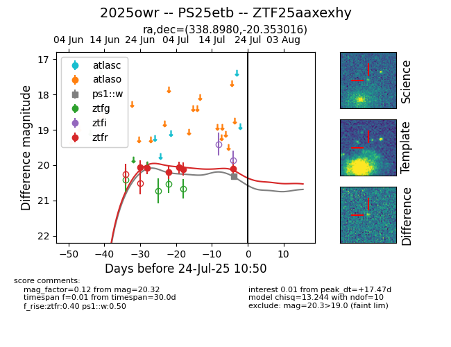

Target 2025owr at 2025-07-24 10:50, see:
FINK: fink-portal.org/2025owr
Lasair: lasair-ztf.lsst.ac.uk/objects/2025owr
ALeRCE: alerce.online/object/2025owr
TNS: wis-tns.org/object/2025owr
YSE: ziggy.ucolick.org/yse/transient_detail/2025owr
alt names
ZTF25aaxexhy (ztf,fink)
2025owr (tns,yse)
PS25etb (panstarrs)
coordinates:
equatorial (ra, dec) = (338.8980,-20.35302)
galactic (l, b) = (37.8476,-58.28518)
photometry
last ps1::w=20.32, ztfr=20.10
1 ps1::w, 6 ztfr detections
